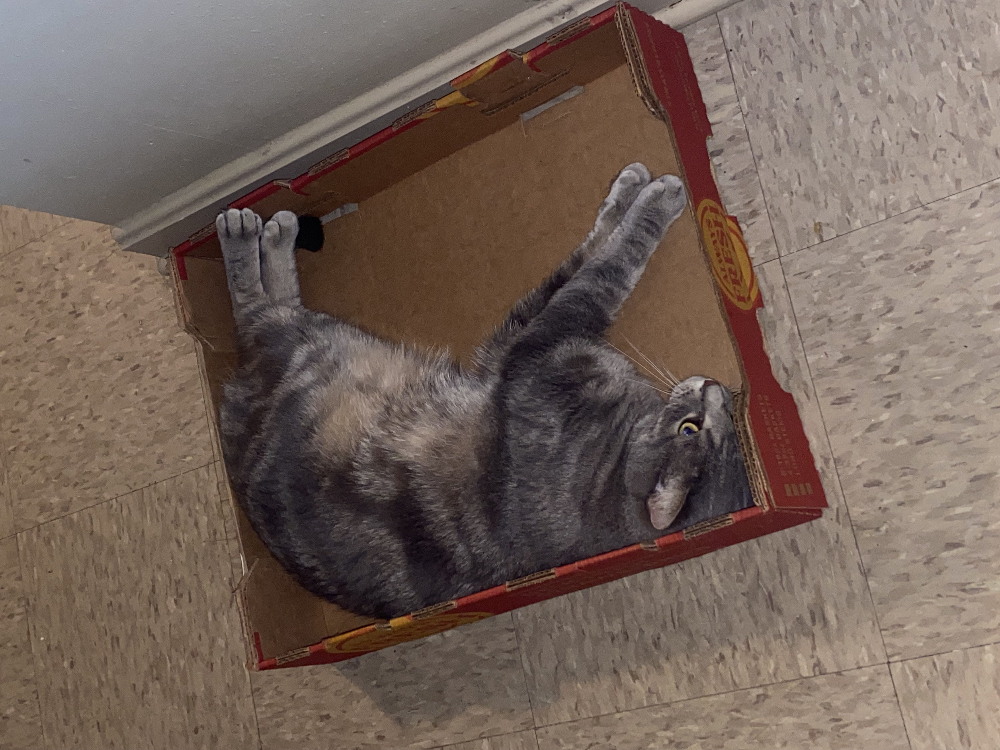
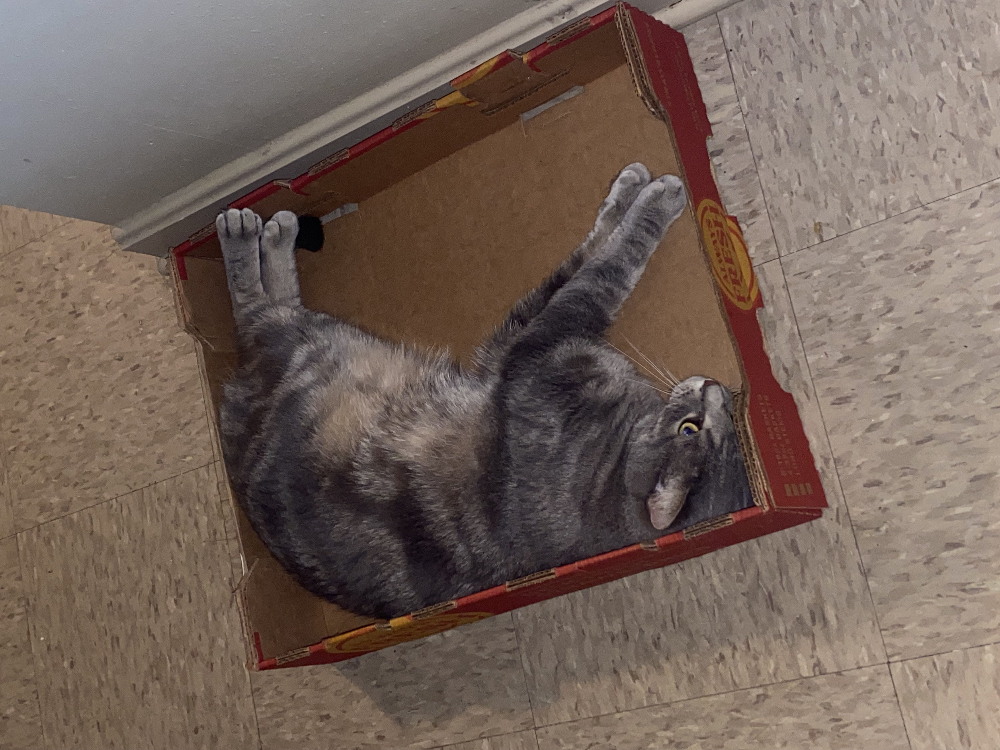

Hi, I'm Jacinta. I'm from the St Louis area. Your favorite Sagittarius, lol. I moved to Kentucky back in 2017 for a change of scenery and thats exactly what I got, lol But moving to Kentucky allowed me to slow down with life, and get to know myself a little better. I am a mother to a 13 year old son and his name is Aydan. I also have two cats! a Gray Tabby named Poppa, my cuddle big baby and a crazy, sassy and wild tortieshell named Ja'ci who keeps me on my toes. And yes.... she's named after me. lol
For the longest, dating back to my childhood, I have never fit in anywhere. I would get along with people but still feel out ot place. Over the past year or so, I've recently learned that I am neurodivergent, which answered all my questions and my life started to make sense. Why does that matter? Well just wait, I'm getting there so you can put everything together. Around the time that I was learning of my neurodivergency, my girlfriend made a random comment to me and said I would thrive in coding. I didnt know what she was talking about lol. I did research on if my neurodivegency would be compatible in this work field and of course it was compatible. This is something new, something foreign, and something that I'd never thought about until now. I get to my BootCamp class at Awesome Inc, and everyone around me are neurodivergent in their own little way. Which leads me to coding, there are a ton of different ways to get to the same answer, it literally just depends on what makes more sense to you as a person and your preferences! My mind was blown when I was putting two and two together. During my time here at the bootcamp I did feel like a belong, I could be myself and not feel like I was being judged or anything. I am so comfortable being here. Don't get me started on the countless times of getting dopamine hits when you get your code to work! The feeling is amazing. But what I'm saying is, to me, the Software development world is a big world specifically for neurodivergent people and I love it. I feel like after 30 some years, I have found my place.
 
